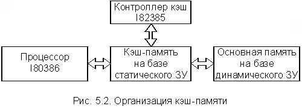

Вначале очень коротко рассмотрим причины, вынуждающие инженеров непрерывно совершенствовать аппаратную и идеологическую основы процессов обмена данными между процессором и памятью.
Как уже отмечалось, память современных ЭВМ имеет иерархическую, многоуровневую структуру. Чем выше уровень, тем выше быстродействие и тем меньше емкость. К верхнему уровню относятся ЗУ, с которыми процессор непосредственно взаимодействует в процессе выполнения программы. Это, прежде всего, основная или оперативная память (ОП), а также сверхоперативная внутренняя память процессора. Последняя имеет очень малую емкость и во внимание приниматься не будет, т.е. речь пойдет только об обмене процессор – ОП. К нижнему уровню памяти относятся внешние ЗУ, обладающие большой емкостью и малым быстродействием. Во всех современных ЭВМ вычислительный процесс строится так, чтобы число обращений к ВП было минимальным. В отличие от ВП современные ОП имеют достаточно высокое быстродействие (цикл обращения составляет десятки наносекунд и менее). Однако при организации взаимодействия процессор – ОП возникает много проблем, связанных с несоответствием пропускной способности процессора и памяти.
Непрерывный рост производительности (скорости работы) ЭВМ, вызываемый потребностями их применения, проявляется, в первую очередь, в повышении скорости работы процессоров. Это достигается использованием более быстродействующих электронных схем, а также специальных архитектурных решений (конвейерная и векторная обработка данных и др.). Быстродействие ОП также растет, но все время отстает от быстродействия аппаратных средств процессора. Это происходит, прежде всего потому, что одновременно идет опережающий рост ее емкости, что делает более трудным уменьшение времени цикла работы памяти.
Результаты, к которым приводит такой разрыв в быстродействии процессора и ОП, можно проиллюстрировать на простейшем примере. Рассмотрим типичный цикл обращения микропроцессора к ОП, состоящий из ряда тактов Т1 Т2 ... Т5, например МП КР580. В такте Т1 МП выставляет на ША адрес ячейки памяти, к которой будет произведено обращение. В такте Т2 МП ожидает приход сигнала READY от модуля памяти. Количество тактов Т2 в общем случае не ограничено. Такт Т3 наступает только после поступления сигнала READY. Из этого примера становится понятным, почему увеличение тактовой частоты не всегда приводит к увеличению скорости выполнения программ, так как МП просто "топчется на месте" в ожидании ответа ОП.
Из всего сказанного следует, что существует, по крайней мере, два направления оптимизации процессов обмена процессора и ОП.
Первое направление – это совершенствование их аппаратной базы. Но, как оказалось, на этом направлении есть ряд серьезных препятствий как технологических, так и принципиальных. Одно из них связано со скоростью распространения электрического сигнала в проводнике. При низкой скорости обмена явление запаздывания сигнала не заметно. Однако оно становится заметным при повышении этих скоростей до величин, пропорциональных 109 обр./с. При дальнейшем увеличении частоты обращений становится невозможным гарантировать правильность работы ОП, так как время получения данных будет существенно зависеть от места их расположения в ОП.
Второе направление – это оптимизирующие алгоритмы взаимодействия процессора и ОП, которые, естественно, также требуют аппаратной поддержки. Ниже, очень коротко, рассматриваются наиболее распространенные методы этого направления, используемые при создании современных ЭВМ.
Более подробно вопросы конвейеризации процесса обработки информации в ЭВМ рассматриваются в последних разделах настоящего курса – "Многопроцессорные системы". Здесь же будут рассмотрены только основные принципы конвейеризации процедур цикла выполнения команды (рабочего цикла машины).
Ранее, при рассмотрении принципов функционирования УУ процессоров, уже упоминалось о конвейерном способе выполнения микрокоманд, когда процедура выполнения i-й микрокоманды в АЛУ совмещалась по времени с процедурой вызова из управляющей памяти i+1 микрокоманды. Этот принцип распространяется и на выполнение команд машины. Еще в 1956 г. академик Лебедев С.А. предложил повышать производительность машин, используя принцип совмещения во времени отдельных этапов рабочего цикла, и реализовал этот принцип в ЭВМ М-20 в форме параллельного выполнения во времени операции в АЛУ и выборки из памяти следующей команды.
В современных ЭВМ очень широко используются различные варианты конвейерного способа выполнения операций, что существенно повышает их производительность. Не вдаваясь в подробности, рассмотрим простейший пример конвейерного способа выполнения микропроцессором операции сложения двух операндов, находящихся в ОП. Для этого необходимо выполнить две команды: 1-я – вызов первого операнда в аккумулятор; 2-я – вызов второго операнда и сложение. В процессе выполнения 1-й команды можно использовать ресурсы МП во время ожидания ответа ОП (например, в МП КР580 это такт Т2 каждого машинного цикла). Для этого необходимо, чтобы вместо пассивного режима ожидания МП инициировал новый цикл обмена с ОП для вызова 2-й команды. По соответствующим сигналам готовности ОП последовательно заканчиваются 1-й и 2-й циклы обращения к памяти и выполняется операция сложения. При этом время каждого обращения к ОП не уменьшается, но суммарное время выполнения двух команд оказывается меньше за счет их перекрытия во времени. Практика показала, что использование конвейера в той или иной форме существенно повышает в среднем скорость обмена процессор – ОП. При этом, естественно, усложняется программное и аппаратное обеспечение ЭВМ в целом (а не только одного МП).
В общем случае конвейерный принцип позволяет процессору параллельно выполнять множество команд. Однако в этом случае как единое устройство процессор функционировать уже не может. Последовательность выполнения каждой команды разделяется в процессоре на основные операции. Для выполнения операций каждого типа служат специализированные исполнительные устройства.
Наиболее общий прием конвейеризации заключается в том, что во время выполнения предыдущей команды с упреждением производится выборка из памяти очередной команды. Тем самым достигается рациональное использование времени работы шины, которое при обычной архитектуре процессора затрачивалось впустую, и сокращается длительность выполнения программы, хотя длительность цикла выполнения отдельных команд может даже несколько увеличиться.
Совмещение во времени этапов цикла выполнения команды давно и широко используется в процессорах, которые в этом случае представляют собой совокупность специализированных исполнительных блоков, управляемых одним УУ. Так, например, в МП фирмы Zilog Z80000 использован шестиступенчатый конвейер, а цикл выполнения команды состоит соответственно из шести этапов:
Когда в конвейере заканчивается выполнение определенного этапа предыдущей команды, высвобождается соответствующий исполнительный блок и может быть начато выполнение аналогичного этапа следующей команды. В идеальной ситуации очередная команда должна поступать на конвейер в тот момент, когда предыдущая команда с него сходит. Это соответствует шестикратному повышению производительности.
Однако при исполнении реальных программ максимальная производительность никогда не достигается по ряду причин. Это, прежде всего:
Нарушение строго последовательного выполнения команд программы вызывает необходимость очистки конвейера от команд, выполнение которых началось после команды, нарушившей эту последовательность (торможение конвейера), и повторного заполнения конвейера командами с новой точки программы (разгон конвейера). Доля команд, на которых естественная последовательность выполнения программы нарушается, обычно составляет 15 – 30% от общего количества команд. При этом вызываемое процентное снижение производительности превышает вероятность их появления в программе.
Наличие команд передачи управления и, в частности, команд условных переходов оказывает самое существенное влияние на производительность конвейера команд, поэтому разработчики идут на существенное усложнение архитектуры процессоров в целях уменьшения этого влияния. Основные пути уменьшения влияния команд условных переходов на производительность конвейера команд состоят в следующем:
Для уменьшения влияния различной продолжительности этапов цикла выполнения команды на производительность разработчики искусственно увеличивают число ступеней конвейера, разбивая этапы на подэтапы, продолжительность выполнения которых примерно одинакова. Однако увеличение числа ступеней конвейера ведет к увеличению времени разгона, которое может существенно понизить общую производительность конвейера при обработке программ с короткими линейными участками. Виду этого число ступеней конвейера команд должно быть оптимальным.
Опыт построения конвейеров команд показывает, что полностью исключить влияние перечисленных выше факторов на производительность конвейера команд не удается. Максимальная производительность возможна только при обработке программ, имеющих длинные линейные участки, с использованием всех ступеней конвейера.
Существуют методы грубой оценки повышения производительности ЭВМ за счет использования конвейера, но они справедливы только для конкретного типа задач и в данном разделе не рассматриваются.
При рассмотрении метода конвейеризации обмена был проигнорирован тот факт, что реальные устройства ОП не допускают одновременного обращения к нескольким ячейкам (имеются в виду реальные БИСы памяти, охваченные общим полем адресов). Выйти из этого положения позволяет следующий метод.
Метод 1
Метод разделения памяти на два модуля с независимой адресацией был предложен и опробован еще в конце 50-х гг. лабораториями Гарвардского университета. Один модуль памяти использовался для хранения команд программы, другой – данных. Оба модуля имели собственные контроллеры памяти и раздельные магистрали доступа. Такой принцип построения ОП оказался во многих случаях очень эффективным и был успешно использован при разработке компьютеров различного назначения. Возник даже термин "Гарвардская архитектура".
Этот принцип сохранен и в современных вариантах ЭВМ (процессорах) Гарвардской архитектуры. Он позволяет совместить во времени циклы обмена с обоими модулями памяти и оказывается эффективным при обработке любых типов программ. В настоящее время Гарвардская архитектура широко используется при построении кэш-памятей (см. п. 9.3.3) мощных процессоров.
Метод 2
В простейшем случае используют два модуля с "веерной" (чередующейся) адресацией, при которой смежные адреса информационных единиц, соответствующих ширине выборки (слово, двойное слово и т.д.), принадлежат разным модулям (т.е. четные адреса принадлежат одному модулю, а нечетные – другому). Это позволяет процессору инициировать второй цикл обмена до завершения первого, поскольку адреса лежат в разных модулях, либо обращаться одновременно двум устройствам к разным модулям памяти. В результате за счет перекрытия во времени обращений к разным модулям пропускная способность ОП в среднем повышается.
Следует отметить, что веерная адресация, как и конвейер команд, оказывается эффективной только при наличии в программе достаточно длинных участков с последовательным выбором команд, т.е. когда вероятность появления команд передачи управления мала. Выигрыш в быстродействии оказывается максимальным, когда необходимо осуществить множество последовательных обращений к ОП в ходе пакетных пересылок в режиме ПДП. В этом режиме в качестве параметров пересылки блока данных указывается начальный адрес и количество слов, подлежащих пересылке.
Двунаправленное расслоение ОП не может предотвратить появления циклов ожидания, поэтому были разработаны системы с 4- и более кратным расслоением ОП, в которых контроллер памяти обеспечивает распределение последовательно вырабатываемых адресов между несколькими модулями памяти.
Проблема повышения пропускной способности характерна для всех уровней иерархии внутренней памяти ЭВМ. Наиболее остро эта проблема стоит перед разработчиками динамических ОП, которые благодаря максимальной информационной емкости и низкой стоимости занимают ведущее место в составе внутренней памяти компьютера. В последнее время предложен ряд вариантов ОП повышенного быстродействия. Это FPM, MDRAM, EDORAM, SDRAM, BEDORAM, RDRAM и многие другие типы памятей.
Методы повышения быстродействия таких памятей основаны на предположении о "кучности" адресов обращения к ОП, т.е. на предположении о том, что адреса последующих обращений к ОП, вероятнее всего, расположены рядом с адресом текущего обращения. Внутренние механизмы реализации этих методов схожи с механизмами конвейеризации процесса выполнения команд в процессоре, расслоения памяти, кэширования (см. п. 9.3.3) только на уровне отдельных БИСов и модулей памяти.
Суть этого метода состоит в том, что между процессором и ОП включаются дополнительные блоки буферных памятей относительно небольшой емкости, но имеющие быстродействие существенно выше, чем ОП. При обращении к таким памятям у процессора не возникает проблем с запаздыванием сигналов и уменьшением из-за этого скорости обмена. Как уже отмечалось, повышение быстродействия БИСов памяти сопровождается резким повышением их стоимости, поэтому доля буферной памяти в общем объеме небольшая, порядка 16-256 Кбайт на 4-8 Мбайт основной памяти. Сверхоперативная память, упоминавшаяся ранее в п. 4.1, также является буферной, однако ее емкость очень незначительна (десятки слов) и в данном случае не учитывается.
В общем случае буферная память состоит из двух модулей: буферной памяти команд и буферной памяти операндов. Структура памяти в этом случае имеет вид, показанный на рис. 5.1. Такая схема буферизации ОП использовалась еще в мэйнфреймах 60-х гг.
Представленные буферные памяти в современных ЭВМ скрыты от программиста в том смысле, что он не может их адресовать и может даже не знать об их существовании, поэтому они получили название кэш-памятей (cache – тайник). Некоторые ЭВМ содержат объединенную кэш-память операндов и команд. Наличие кэш в общем случае не исключает присутствия в процессоре небольшой сверхоперативной памяти.
Таким образом, кэш-память представляет собой быстродействующее ЗУ, размещенное в одном кристалле с процессором или же внешнее по отношению к кристаллу, но размещенное на той же плате. При обращении процессора к ОП для считывания в кэш пересылается блок информации, содержащий нужное слово. При этом происходит опережающая выборка, так как высока вероятность того, что ближайшие обращения будут происходить к словам блока, уже находящегося в кэш. Это приводит к значительному уменьшению среднего времени, затрачиваемого на выборку данных и команд.
Для обращения к кэш, размещенному вне кристалла процессора, но на одной с ним плате, может потребоваться несколько тактов, тогда как при обращении к кэш, размещенному внутри кристалла процессора, может оказаться достаточно одного такта. Однако даже размещение кэш на одной плате с процессором позволяет избежать большого числа циклов ожидания, которые неизбежны при работе с ОП, расположенной на отдельной плате и взаимодействующей с процессором через системную шину. Кроме того, выборка содержимого кэш-памяти может производиться произвольным образом, и, следовательно, в адресном пространстве кэш можно разместить командные циклы с входящими в них командами переходов (передачи управления).
Все это позволяет не только ускорить операции обмена процессор – память, но также снизить загрузку системной магистрали. Последнее стало особенно актуально с возникновением многопроцессорных систем, в которых процессорные элементы располагаются на общей магистрали и имеют общий модуль ОП. Уже отмечалось, что обмен между устройствами ЭВМ по общей магистрали возможен только в неперекрывающиеся моменты времени (т.е. в каждый момент времени с ОП может общаться только один процессор). Поэтому кэш-память оказалась очень удобным инструментом для сокращения числа обращений каждого процессора к ОП, а, следовательно, и загрузки системной магистрали ЭВМ.
Таким образом, снижение загрузки системной магистрали является еще одной причиной (помимо ускорения операций обмена процессор – ОП) включения в структуру современных ЭВМ модулей кэш. Кроме того, как будет показано в гл. 11, наличие кэш-памяти достаточного объема позволяет не прерывать работу процессора даже при захвате магистрали каким-либо устройством, т.е. при осуществлении обмена в режиме ПДП.
Производительность кэш-памяти определяется временем доступа к ней и вероятностью удачных обращений, которая зависит от объема кэш и количества слов в блоке (строке), переносимых в кэш при каждом обращении к ОП. С увеличением длины блока возрастает вероятность того, что следующее обращение будет удачным, т.е. необходимая информация окажется в кэш-памяти. Однако эта зависимость нелинейная и имеет свой оптимум в координатах "производительность - стоимость", который обусловлен тем, что увеличение размера блока свыше некоторого оптимального приводит лишь к незначительному увеличению вероятности удачных обращений к кэш.
Полная производительность памяти ЭВМ (при наличии кэш) является функцией времени доступа к кэш, вероятности удачных обращений к кэш и времени обращения к ОП, которое происходит при неудачном обращении к кэш. Численная оценка полной производительности памяти оказывается в этом случае очень сложной задачей, особенно при учете увеличения быстродействия ОП за счет расслоения, и решается только статистическими методами.
При проектировании аппаратного и алгоритмического обеспечения кэш-памяти приходится учитывать большое число различных факторов и, часто взаимоисключающих, требований, поэтому конкретное исполнение кэш-памяти в различных ЭВМ отличается большим разнообразием. В частности, одной из проблем является взаимодействие кэш и ОП при изменении в процессе выполнения программы находящейся в кэш информации. В настоящее время эта задача решается, в основном, двумя путями, каждый из которых определяет тип кэш:
Задача выбора алгоритма перемещения блоков информации из кэш-памяти в ОП при вызове из ОП новых блоков также не имеет однозначного решения. В большинстве случаев из кэш-памяти удаляется блок информации, который используется наиболее редко либо не использовался дольше других. Возможны и другие алгоритмы замещения. В частности, в кэш с прямым отображением, в котором за каждой ячейкой кэш закреплена определенная группа ячеек ОП, замена информации в ячейках кэш происходит по мере обращения процессора к соответствующей группе ячеек ОП (более подробно этот вопрос рассматривается ниже).
Следует отметить, что наличие кэш-памяти усложняет работу вычислительной системы и требует дополнительного программно-аппаратного обеспечения. В частности, требуется специальный контроллер кэш-памяти, который перехватывает обращения процессора к ОП и обрабатывает их непосредственно сам, без передачи запросов шине.
В качестве примера рассмотрим организацию кэш-памяти в вычислительных системах, построенных на базе 32-разрядного процессора I80386. В архитектуре микропроцессора I80386 за ячейку памяти на аппаратном уровне принята последовательность из восьми смежных бит, т.е. 1 байт. Несмотря на то, что МП I80386 является 32 - разрядным, наибольшая эффективность достигается в нем при обработке 16-разрядных данных, поэтому в качестве машинного слова в данном МП выбраны два объединенных байта.
В вычислительных системах, построенных на базе I80386, управление кэш-памятью осуществляется высокопроизводительным контроллером кэш-памяти I82385. Для инициализации контроллера I82385 не требуется специального программного обеспечения, а сам контроллер программно невидим (прозрачен), поэтому он может быть легко применен в системах с уже существующим программным обеспечением, а разработка нового программного продукта не потребует специфических условий, связанных с этим контроллером. Контроллер обеспечивает прозрачность на шине с помощью наблюдения за шиной ("подслушивание" шины). Наблюдение за шиной реализуется контроллером через интерфейс, аналогичный интерфейсу шины процессора I80386. Благодаря своей прозрачности контроллер кэш-памяти I82385 может быть включен в состав микропроцессорных систем на базе I80386 для работы в конвейерном и неконвейерном режиме и адресации пространства ОП до 4 Гбайт. Обновление ОП выполняется на каждом цикле записи методом "сквозной записи". При этом производительность повышается вследствие выдачи запросов на операции записи через некоторый буфер, позволяющий процессору продолжать работу с кэш-памятью, пока идет обращение к ОП. Если содержимое ячеек ОП, копии которых находятся в кэш, в процессе выполнения программы изменилось, контроллер автоматически обновляет содержимое соответствующих ячеек кэш-памяти.
Очень упрощенная структура кэш вычислительной системы на базе I80386 и I82385 (да в принципе и любой другой) изображена на рис. 5.2. Причем в вычислительных системах на базе I80386 и I82385 используется объединенный кэш команд и данных.

Как уже отмечалось, пересылка информации из ОП в кэш-память и обратно осуществляется целыми блоками. Для этого ОП также разделяют на блоки от 2 до 16 байт. Если запрашиваемая процессором информация не находится в кэш, то контроллер кэш-памяти обновляет содержимое кэш целым блоком. Размер блока является очень важным параметром, определяющим эффективность работы кэш-памяти. В 32 - разрядных системах контроллер в качестве блока пересылает совокупность данных размером 2 – 4 слова (4 – 16 байт). Даже если запрашивается одиночное слово, то все равно осуществляется блочная пересылка. С увеличением блока замедляется модификация кэш, но увеличивается коэффициент попадания. Так, увеличение блока с 4 байт до 8 увеличивает коэффициент попадания на несколько процентов. Однако при этом в кэш размещается меньшее число блоков. А с уменьшением числа блоков растет вероятность операций пересылки блоков между кэш и ОП, поэтому приходится выбирать оптимум (что уже отмечалось). Обычно в вычислительных системах на базе I80386, I82385 работа кэш-памяти организована так, что вероятность удачных обращений достигает 0,95.
При обработке различных классов задач наибольшую эффективность системы кэш-памяти достигают при использовании различных структур, а именно: полностью ассоциативных кэш, кэш с прямым отображением и множественный ассоциативный кэш. Каждая из этих структур имеет свои преимущества и недостатки. В принципе, все эти структуры поддерживаются контроллером кэш I82385 с некоторыми ограничениями. Рассмотрим эти структуры подробнее, полагая, что емкость ОП вычислительной системы составляет 16 Мбайт.
Приведенные ниже схемы организаций кэш и терминология взяты из книги Паппарс К., Марри У. Микропроцессор 80386: Справочник. М.: Радио и связь, 1993. –318 с.
Полностью ассоциативный кэш (рис. 5.3)
Концепция полностью ассоциативного кэш основана на том предположении, что процессор обращается к адресам, лежащим в разных частях ОП, поэтому для обеспечения общей эффективности работы механизм кэш должен поддерживать множественные несвязанные блоки данных. Поскольку между блоками нет в этом случае каких-либо определенных взаимосвязей, в кэш должны записываться полный адрес каждого блока и непосредственно сам блок. При обращении к памяти контроллер кэш-памяти сравнивает полученный адрес с адресами, отображенными на кэш.
Существенным недостатком полностью ассоциативных кэш является то, что всякий раз при обращении к памяти затрачивается время на сравнение адресов в кэш. Следует отметить, что в стандартной конфигурации вычислительных систем на базе процессора I80386 и контроллера кэш-памяти I82385 структура полностью ассоциативного кэш не используется.
В литературе нет данных о том, как осуществляется контроль ассоциации при использовании контроллера I82385. Судя по всему, происходит последовательное сравнение ячеек кэш с 22-разрядным полем признака (адресом) без вызова их в контроллер. Такой последовательный процесс сравнения и увеличивает время поиска.
Известно также, что в ряде устройств ассоциативной памяти контроль ассоциации осуществляется последовательно по битам ассоциативного признака. Применительно к данному кэш это означает, что происходит параллельное сравнение 128 бит в i-м разряде адреса, т.е. необходимо выполнить последовательно 22 сравнения, чтобы проанализировать все поле признака (адреса).
Кэш с прямым отображением (рис. 5.4)
При использовании кэш такого типа ОП условно делится на 256 страниц по 64 Кбайт каждая. Каждая страница имеет свой базовый адрес, задаваемый 8 битами поля признака (старшие разряды адреса ячейки ОП). Объем кэш (банк данных) соответствует объему одной страницы (64 Кбайт). Поле индекса в адресе занимает 16 бит. Из них 14 используются для выбора одного из 16 Кбайт 4 байтовых блоков (ячеек) кэш или ОП (на странице с соответствующим признаком), а два бита определяют один из 4 байтов в блоке, т.е. индекс является ничем иным, как смещением относительно базового адреса (признака).
Копии блоков с одинаковыми адресами на всех страницах ОП помещаются в одну и ту же ячейку кэш с аналогичным адресом. Таким образом, на один адрес кэш отображаются 256 адресов ОП (256*64 Кбайт = 16 Мбайт). Сам кэш имеет два уровня. Первый уровень образован банком признаков и содержит адресную информацию. В данном случае это базовые адреса страниц ОП (признаки). В некоторых источниках вместо термина признак употребляют тег. Второй уровень состоит из банка данных, в котором содержатся 4 байтовые копии (блоки) ячеек ОП.
Упрощенный алгоритм обращения процессора к памяти состоит в следующем:
Рассмотренная структура кэш отличается от предыдущей (полностью ассоциативной) тем, что здесь нет неопределенности в размещении блока данных. Адрес (индекс) указывается непосредственно в запросе процессора, и сравнивать приходится только признак. Это ускоряет процесс обмена.
Недостатком такого типа кэш является то, что на одну ячейку кэш отображается 256 адресов ОП, т.е. одинаковые адреса со всех страниц ОП, поэтому при циклическом обращении процессора к одинаковым адресам хотя бы на двух разных страницах возникает "пробуксовка" кэш. В этом случае при каждом обращении происходит обновление содержимого соответствующей ячейки кэш. Этой проблемы можно избежать, разрешив любой ячейке в ОП направляться по мере необходимости не в одну, а в две или более ячеек кэш. При этом увеличивается коэффициент попаданий, но и усложняется алгоритм обращения к памяти.
Двухвходовый множественный ассоциативный кэш (рис. 5.5)
Множественный ассоциативный кэш занимает промежуточное положение между полностью ассоциативным кэш и кэш с прямым отображением. Из приведенной структурной схемы следует, что банк признаков и банк данных, используемые в кэш с прямым отображением, в данном случае разбиваются на два блока, в каждом из которых есть свой банк признаков и банк данных емкостью 32 Кбайт. Оба блока кэш имеют одинаковую адресацию, т.е. индекс изменяется от 0000 до 7FFC. При использовании кэш такого типа ОП делится уже не на 256 страниц, а на 512, каждая из которых имеет свой 9-разрядный признак (базовый адрес) от 000 до 1FF (32 Кбайт). Данные из ОП могут быть помещены в любую из двух ячеек с соответствующим индексом (смещением) банков данных, относящимся к разным блокам кэш. В соответствии с принятым алгоритмом контроллер кэш I82385 помещает новый блок данных из ОП в ту из двух ячеек, содержимое которой наиболее долго не использовалось.
Алгоритм обращения к памяти полностью аналогичен описанному ранее для кэш с прямым отображением, за исключением того, что в данном случае контроллеру приходится одновременно проверять две ячейки с одинаковыми индексами (смещением) в обоих блоках кэш. Изменился также формат адресных полей.
Производительность для двухвходового ассоциативного кэш примерно на 1% выше, чем у кэш с прямым отображением. Возможно построение четырёхвходовых и более множественных ассоциативных кэш, состоящих из четырёх и более блоков с одинаковой адресацией. При этом увеличивается производительность, но и усложняется алгоритм обращения к памяти.
В заключение следует отметить, что в вычислительных системах на базе процессора I80386 в стандартной конфигурации контроллер кэш I82385 поддерживает работу двухвходового множественного ассоциативного кэш и кэш с прямым отображением.
В современных ЭВМ, построенных на базе мощных процессоров, происходит дальнейшее расслоение внутренней памяти и, прежде всего, расслоение кэш. Быстродействующий внутрикристальный кэш первого уровня и более "медленный" внешний кэш второго уровня являются обязательными компонентами всех современных IBM PC. Взаимодействие кэш обоих уровней строится по принципам, аналогичным принципам взаимодействия остальных иерархических слоев памяти – минимизация числа обращений более быстродействующего слоя к менее быстродействующему. Дальнейшее увеличение производительности процессоров неизбежно повлечет за собой и дальнейшее расслоение кэш-памяти ЭВМ.